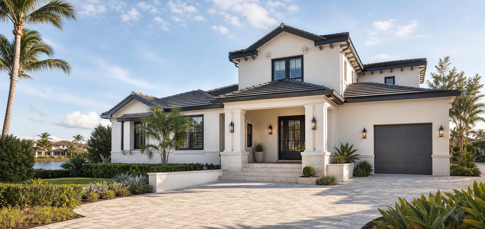

Florida Exterior Protection
Exterior Protection Built for Florida Homes
Premium exterior coating systems designed around Florida sun, humidity, wind-driven rain, and long-term curb appeal.
Professional preparation Weather-aware finish systems Consultation-based recommendations

PrimeCoat Difference
More Than a Standard Repaint
A standard repaint can refresh the surface. A premium exterior coating system looks deeper at surface condition, preparation, product compatibility, and Florida exterior exposure.
Preparation Before Finish
Surface review, cleaning, detail work, and preparation shape the finished result.
Coating Selection by Surface
Recommendations are selected around surface condition, compatibility, and project goals.
Long-Term Curb Appeal Focus
The goal is a refined exterior finish that helps preserve the home's appearance.
Exterior Protection Systems
Premium Exterior Coating Systems
PrimeCoat Florida recommends consultation-selected exterior coating systems for Florida homes. Recommendations are based on surface condition, exterior exposure, preparation needs, homeowner goals, and compatible manufacturer specifications.
Project surfaces may include stucco, masonry, concrete, brick, CMU/block, and compatible previously coated exterior surfaces depending on condition, preparation, and manufacturer guidance.
Request a Coating ConsultationCoating System Strategy
Product Selection for Florida Exteriors
Product selection is not one-size-fits-all. PrimeCoat Florida reviews manufacturer guidance, surface condition, preparation requirements, exposure, and homeowner goals before recommending a coating or finish path.
High-Build Exterior Protection
Considered for properly prepared concrete, CMU/block, stucco, and masonry conditions where a more substantial exterior coating fits the project and manufacturer guidance.
UV & Color Planning
Considered for elevations with strong daily sun exposure, existing fading, chalking, color goals, product availability, and compatible coating specifications.
Cleaner-Looking Finish Conversation
Considered where finish selection may support a cleaner-looking exterior appearance without implying the exterior will need no care.
Surface-Specific Language
Stucco, masonry, concrete, brick, cement board, CMU/block, and previously coated surfaces are reviewed by condition, preparation needs, and manufacturer guidance.
Coating Education Center
How PrimeCoat Evaluates an Exterior Coating System
Homeowners comparing coating systems usually want clear answers: what system may fit, what preparation is included, what surfaces qualify, how performance should be discussed, and how cost or financing enters the decision. PrimeCoat keeps that conversation specific to the home and claim-safe.
Consultation Based
Product Fit Comes After Surface Review
A coating line is discussed only after the home is reviewed. Compatibility depends on the substrate, existing coating, pH, porosity, repairs, exposure, color direction, and written product guidance.
Ask Which System FitsCoating vs. Repaint
A coating system conversation considers surface condition, product compatibility, prep, film build, and finish goals.
Testing Topics
Wind-driven rain, UV exposure, alkali resistance, dirt pickup, adhesion, and mildew resistance are discussed through product documentation.
Repair Scope
Cracks, chalking, loose coating, failing caulk, stucco damage, and wood details are identified before product selection.
Warranty Language
Warranty terms are reviewed from the applicable product and project documents after the final system is selected.
Benefits
Built for Florida Exterior Exposure
Explore the homeowner benefits behind a weather-aware exterior coating conversation. Each topic opens with more detail about how PrimeCoat evaluates the home, the surface, and the finish goal.
Benefit Detail
Sun & UV Exposure
Finish systems are selected with Florida exterior exposure in mind.
Performance Topics
What We Review Before Recommending a System
A premium coating sale should educate without overpromising. These are the practical topics PrimeCoat reviews during a consultation so homeowners can compare coating options with a clearer understanding of product fit and project scope.
Wind-Driven Rain
For compatible masonry, manufacturer documentation may include moisture and wind-driven rain considerations.
UV & Reflective Technology
Sun-aware finish options can be discussed for select exposed surfaces without promising comfort or savings outcomes.
Alkali & Efflorescence
Concrete, stucco, and block can require pH and surface-condition review before coating recommendations are made.
Dirt-Shedding Finish
Cleaner-looking finish goals may be reviewed where compatible products support the project goals.
Adhesion & Soundness
Loose paint, chalking, moisture, cracks, and previous coatings must be addressed before finish application.
Written Recommendation
The final scope should identify surfaces, preparation, selected products, finish areas, exclusions, and warranty documents.
System Tabs
Coating Strategy by Project Type
Select a project path to see how PrimeCoat frames product fit, preparation, financing, and warranty-safe language without turning the site into a generic paint pitch.
Primary System
Premium Masonry Coating Review
For masonry-focused coating projects, PrimeCoat reviews compatible coating options against your surface condition, preparation needs, exposure, and manufacturer specifications.
- High-build coating conversations for compatible concrete, CMU/block, stucco, and masonry.
- Sun-aware finish discussions for select exposed surfaces without comfort or savings promises.
- Cleaner-looking finish options where compatible products support the project goals.
Finish Refresh
Exterior Painting as a Finish System
Some homes may need a premium exterior paint or finish path rather than a masonry coating system. The recommendation depends on substrate, existing coatings, and project goals.
- Best fit: compatible exterior walls, trim, accents, and finish refreshes.
- Strategy: separate standard finish work from masonry coating recommendations.
- Language: selected based on project conditions and manufacturer guidance.
Before Product
Preparation Determines the System
Surface preparation comes before product selection. Cleaning, soundness, chalking, peeling, porosity, pH, cracks, and previous coatings all affect the recommendation.
- Best fit: homes where surface condition needs a careful review.
- Strategy: preparation notes support compatibility and a clearer scope.
- Warranty-safe: terms depend on product specs, substrate, preparation, and proper application.
Separate Finish Path
Wood & Exterior Finish Compatibility
Wood features are reviewed separately from masonry. They may require different primers, stains, or finish products than stucco, concrete, or CMU/block.
- Best fit: doors, accents, soffit details, railings, and exterior wood features.
- Strategy: keep masonry coating language separate from wood finishing language.
- Language: finish approach depends on exposure, existing condition, and compatible products.
Florida Strategy
Competitor-Smart, Claim-Safe Positioning
PrimeCoat does not need exaggerated promises to compete. The stronger strategy is consultation, preparation, product selection, financing conversation, and clear scope.
- Best fit: homeowners comparing premium coating systems and repaint options.
- Financing: options may be available for qualified homeowners after scope is understood.
- Language: weather-aware finish systems for Florida exposure, with written warranty terms confirmed during consultation.
PrimeCoat Florida System
A Clean Process, Start to Finish
A premium exterior coating project should feel organized before work begins. PrimeCoat uses a clear process for reviewing the home, preparing the surface, selecting the right finish path, and confirming the completed exterior presentation.
Process Detail
Inspect
PrimeCoat reviews the home before recommending a finish path.
Video Learning Library
Space for Product, Process, and Consultation Videos
These placeholders are ready for original PrimeCoat Florida videos. Once real footage is available, this section can hold homeowner education without borrowing competitor media or jobsite visuals.
What Is a Premium Coating System?
Explain coating vs. repaint, product fit, and safe homeowner expectations.
Why Preparation Comes First
Show inspection, cleaning, repairs, caulking, masking, and finish planning.
Coating System Options
Introduce coating selection, compatibility, and documentation in plain language.
Cost & Financing Conversation
Walk homeowners through scope, investment factors, and financing options.
Video Placeholder
Original PrimeCoat video space
This space is ready for an original PrimeCoat Florida educational video.
Cost Education
What Shapes the Investment?
Premium exterior coating systems are priced around the home and the scope, not a generic square-foot teaser. A clear consultation helps define preparation, product fit, finish areas, access, repair needs, and financing conversation before a homeowner decides.
Financing Conversation
Protect Your Home Now — Financing Options May Be Available
Premium exterior coating projects can be a larger home investment. A clear consultation helps homeowners understand scope, available options, and any financing conversation before making a decision.
PrimeCoat Florida is not a lender. Financing, if available, is offered by third-party providers and is subject to credit approval, provider terms, and availability. This website does not advertise specific rates, payments, down payments, or approval terms.
- Clear consultation first
- No-pressure project review
- Financing conversation available
- No approval, rate, or payment promises
Consultation Process
A Clear Consultation Before You Commit
Exterior Review
We review your home's exterior surfaces, condition, and Florida exposure.
Surface & System Recommendation
We explain coating or finish options based on your home's needs.
Clear Project Scope
You receive a clear recommendation and estimate conversation.
Professional Preparation & Finish
The project focuses on preparation, compatibility, selected coating products, and a premium exterior result.
Homeowner Questions
Exterior Coating FAQs
Short answers for the questions homeowners usually ask before scheduling a coating consultation.
Is this regular paint?
No. PrimeCoat evaluates premium exterior coating and finish systems. Some projects may use a coating path, while others may be better served by a premium exterior paint or finish path.
What products do you use?
PrimeCoat reviews approved coating and finish options based on the surface, preparation needs, project goals, and manufacturer documentation. The exact product line is confirmed in the written recommendation.
Which surfaces may qualify?
Possible surfaces include stucco, masonry, concrete, brick, CMU/block, cement board, compatible previously coated surfaces, and separate exterior wood details depending on condition and guidance.
Can reflective coatings lower my bill?
Reflective coating technology can be discussed for select sun-exposed masonry projects, but PrimeCoat does not promise exact savings, bill reductions, or comfort outcomes.
What warranty applies?
Warranty terms depend on the selected product, surface condition, preparation, application, scope, and manufacturer documentation. Final terms are reviewed during consultation.
Is financing available?
Financing options may be available for qualified homeowners through third-party providers. Approval, terms, and availability are determined by the provider, not by this website.
Are website estimates binding?
No. Website information and consultation requests are informational. Final pricing, scope, preparation, product selection, warranty terms, and any permit or license details must be confirmed in a written proposal or contract.
Request Consultation
Request a Free Exterior Consultation
Tell us a little about your home and what you are considering. A clear consultation helps match the right exterior finish approach to your project.
Legal & Claim Safety
Clear Notes Before a Homeowner Commits
PrimeCoat Florida keeps public claims tied to inspection, surface condition, product compatibility, manufacturer guidance, and written project scope.
Final coating recommendations depend on the home, surface condition, product availability, and manufacturer documentation.
Financing options may be available for qualified homeowners through third-party providers. No rates, payments, or approvals are promised here.
Warranty terms depend on the selected products, preparation, surface condition, application, and written manufacturer or project documents.
Applicable license, insurance, permit, and scope details should be confirmed before regulated contracting work is advertised, contracted, or performed.
PrimeCoat Florida
Ready to Explore a Premium Exterior Coating System?
Start with a clear, no-pressure consultation for your Florida home.